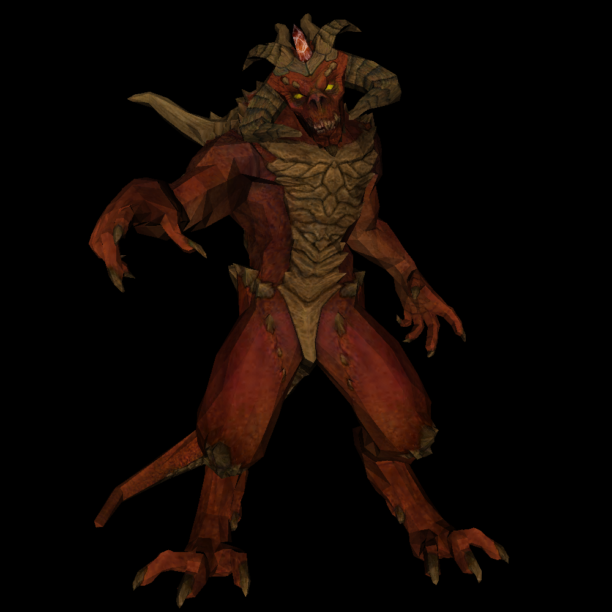

I am a third year student at UC Santa Cruz, and I'm pursuing a B.S. in
Computer Science: Game Design, and a Minor in Electronic Music. I have experience
programming in C#, C++, JavaScript, Java, Lua, & Python. I'm also experienced in
software engineering, technical systems design, game programming, and sound design.
I am actively building games in Unity/Godot and experimenting with advanced graphical
algorithms.
I'm currently looking for an internship for Summer 2026 as a software engineer,
game designer, or sound designer.
View my resume.
Tiny Renderer
Diablo monster 3D model rendered using my Tiny Renderer.
Tiny Renderer is a 3D rendering API that I implemented in C++. I used Bresenham's line algorithm and Barycentric coordinates to draw lines and triangles on screen with UV texture mapping and flat shading. I also designed and implemented a Matrix class to use for calculating perspective projection.